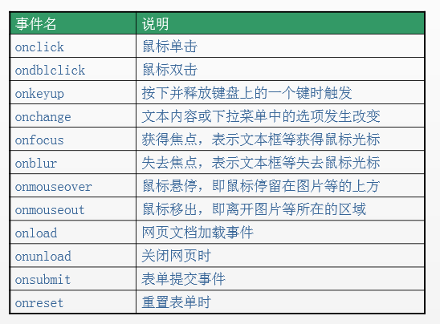
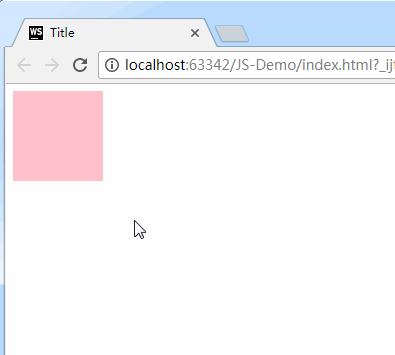

事件：就是文档或浏览器窗口中发生的一些特定的交互瞬间。对于 Web 应用来说，有下面这些代表性的事件：点击某个元素、将鼠标移动至某个元素上方、关闭弹窗等等。
JavaScript 是以事件驱动为核心的一门语言。JavaScript 与 HTML 之间的交互是通过事件实现的。
事件的三要素：事件源、事件、事件驱动程序。
比如，我用手去按开关，灯亮了。这件事情里，事件源是：手。事件是：按开关。事件驱动程序是：灯开了或者关了。
再比如，网页上弹出一个广告，我点击右上角的X，广告就关闭了。这件事情里，事件源是：X。事件是：onclick。事件驱动程序是：广告关闭了。
于是我们可以总结出：谁引发的后续事件，谁就是事件源。
总结如下：
事件源：引发后续事件的html标签。
事件：js已经定义好了（见下图）。
事件驱动程序：对样式和html的操作。也就是DOM。
也就是说，我们可以在时间对应的属性中写一些js代码，当事件被触发时，这些代码将会执行。
代码书写步骤如下：（重要）
（1）获取事件源：document.getElementById(“box”); // 类似于Android里面的findViewById
（2）绑定事件： 事件源box.事件onclick = function(){ 事件驱动程序 };
（3）书写事件驱动程序：关于DOM的操作。
最简单的代码举例：（点击box1，然后弹框）
<body>
<div id="box1"></div>
<script type="text/javascript">
// 1、获取事件源
var div = document.getElementById("box1");
// 2、绑定事件
div.onclick = function () {
// 3、书写事件驱动程序
alert("我是弹出的内容");
}
</script>
</body>
常见的事件如下：

下面针对这事件的三要素，进行分别介绍。
获取事件源的常见方式如下：
var div1 = document.getElementById("box1"); //方式一：通过id获取单个标签
var arr1 = document.getElementsByTagName("div"); //方式二：通过 标签名 获得 标签数组，所以有s
var arr2 = document.getElementsByClassName("hehe"); //方式三：通过 类名 获得 标签数组，所以有s
方式一：直接绑定匿名函数
<div id="box1" ></div>
<script type="text/javascript">
var div1 = document.getElementById("box1");
//绑定事件的第一种方式
div1.onclick = function () {
alert("我是弹出的内容");
}
</script>
方式二：先单独定义函数，再绑定
<div id="box1" ></div>
<script type="text/javascript">
var div1 = document.getElementById("box1");
//绑定事件的第二种方式
div1.onclick = fn; //注意，这里是fn，不是fn()。fn()指的是返回值。
//单独定义函数
function fn() {
alert("我是弹出的内容");
}
</script>
注意上方代码的注释。绑定的时候，是写fn，不是写fn()。fn代表的是整个函数，而fn()代表的是返回值。
方式三：html代码内绑定（行内绑定）
<!--行内绑定-->
<div id="box1" onclick="fn()"></div>
<script type="text/javascript">
function fn() {
alert("我是弹出的内容");
}
</script>
注意第一行代码，绑定时，是写的"fn()"，不是写的"fn"。因为绑定的这段代码不是写在js代码里的，而是被识别成了字符串。
方式四：使用addEventListener函数绑定
window.addEventListener('load',init);
function init(){
alert("页面加载成功");
}
addEventListener() 可以给同一个元素绑定多个事件，不会发生覆盖的情况。如果给同一个元素绑定多个事件，那么采用先绑定先执行的规则。
addEventListener() 在绑定事件的时候，事件名称之前不需带 on 。
可以使用 removeEventListener() 来移除之前绑定过的事件。
window.removeEventListener('load',init);
function init(){
alert("页面加载成功");
}
我们在上面是拿alert举例，不仅如此，我们还可以操作标签的属性和样式。举例如下：
点击鼠标时，原本粉色的div变大了，背景变红：
<style>
#box1 {
width: 100px;
height: 100px;
background-color: pink;
cursor: pointer;
}
</style>
</head>
<body>
<div id="box1" ></div>
<script type="text/javascript">
var div1 = document.getElementById("box1");
//点击鼠标时，原本粉色的div变大了，背景变红了
div1.onclick = function () {
div1.style.width = "200px"; //属性值要写引号
div1.style.height = "200px";
div1.style.backgroundColor = "red"; //属性名是backgroundColor，不是background-color
}
</script>
</body>
上方代码的注意事项：
在js里写属性值时，要用引号
在js里写属性名时，是backgroundColor，不是CSS里面的background-color。
实现效果如下：

onload事件比较特殊，这里单独讲一下。
当页面加载（文本和图片）完毕的时候，触发onload事件。
举例：
<script type="text/javascript">
window.onload = function () {
console.log("smyhvae"); //等页面加载完毕时，打印字符串
}
</script>
有一点我们要知道：js的加载是和html同步加载的。因此，如果使用元素在定义元素之前，容易报错。这个时候，onload事件就能派上用场了，我们可以把使用元素的代码放在onload里，就能保证这段代码是最后执行。
建议是：整个页面上所有元素加载完毕再执行js内容。所以，window.onload可以预防使用标签在定义标签之前。
比如上面这张图，当鼠标点击右上角的X时，关掉整个广告栏，这就要用到事件。
代码实现如下：
<!DOCTYPE html>
<html>
<head lang="en">
<meta charset="UTF-8">
<title></title>
<style>
* {
padding: 0;
margin: 0;
}
.top-banner {
background-color: pink;
height: 80px;
}
.w {
width: 1210px;
margin: 10px auto;
position: relative;
}
img {
display: block;
width: 1210px;
height: 80px;
background-color: blue;
}
a {
position: absolute;
top: 5px;
right: 5px;
color: #fff;
background-color: #000;
text-decoration: none;
width: 20px;
height: 20px;
font: 700 14px/20px "simsum";
text-align: center;
}
.hide {
display: none!important;
}
</style>
</head>
<body>
<div class="top-banner" id="topBanner">
<div class="w">
<img src="" alt=""/>
<a href="#" id="closeBanner">×</a>
</div>
</div>
<script>
//需求：点击案例，隐藏盒子。
//思路：点击a链接，让top-banner这个盒子隐藏起来（加隐藏类名）。
//1.获取事件源和相关元素
var closeBanner = document.getElementById("closeBanner");
var topBanner = document.getElementById("topBanner");
//2.绑定事件
closeBanner.onclick = function () {
//3.书写事件驱动程序
//类控制
// topBanner.className += " hide"; //保留原类名，添加新类名
topBanner.className = "hide";//替换旧类名（方式一）
// topBanner.style.display = "none"; //方式二：与上一行代码的效果相同
}
</script>
</body>
</html>
注意最后一行代码，这种方式会替换旧类名，意思是，不管之前的类名叫什么，都会被修改。
要求实现效果：当鼠标悬停在img上时，更换为另外一张图片；鼠标离开时，还原为本来的图片。
代码实现：
<!DOCTYPE html>
<html>
<head lang="en">
<meta charset="UTF-8">
<title></title>
<script>
//window.onload页面加载完毕以后再执行此代码
window.onload = function () {
//需求：鼠标放到img上，更换为另一张图片，也就是修改路径（src的值）。
//步骤：
//1.获取事件源
//2.绑定事件
//3.书写事件驱动程序
//1.获取事件源
var img = document.getElementById("box");
//2.绑定事件(悬停事件：鼠标进入到事件源中，立即触发事件)
img.onmouseover = function () {
//3.书写事件驱动程序(修改src)
img.src = "image/jd2.png";
// this.src = "image/jd2.png";
}
//2.绑定事件(悬停事件：鼠标进入到事件源中，立即触发事件)
img.onmouseout = function () {
//3.书写事件驱动程序(修改src)
img.src = "image/jd1.png";
}
}
</script>
</head>
<body>
<img id="box" src="image/jd1.png" style="cursor: pointer;border: 1px solid #ccc;"/>
</body>
</html>
1.鼠标事件
onclick：点击某个对象时触发 ondblclick：双击某个对象时触发 onmouseover：鼠标移入某个元素时触发 onmouseout：鼠标移出某个元素时触发 onmouseenter：鼠标进入某个元素时触发 onmouseleave：鼠标离开某个元素时触发 onmousedown：鼠标按下时触发 onmouseup：鼠标抬起时触发 onmousemove：鼠标被移动时触发 onwheel：鼠标滚轮滚动时触发 oncontextmenu：点击鼠标右键时触发
2.键盘事件
onkeydown：键盘的键按下时触发 onkeyup：键盘的键放开时触发 onkeypress：按下或按住键盘键时触发
3.多媒体事件
onplay：在视频/音频开始播放时触发 onended：在视频/音频播放结束时触发 onpause：在视频/音频暂停时触发
4.框架/对象事件
onresize：浏览器窗口大小改变时触发 onabort：图形的加载被中断时触发 onload：元素加载完时触发 onerror：当加载文档或者图片时（没找到）发生的错误时触发 onscroll：文档滚动时触发 onpageshow：用户访问页面时触发 onunload：用户退出页面时触发
5.表单事件
onfocus：元素获得焦点时触发 onblur：元素失去焦点时触发 onchange：元素内容改变时触发 oninput：元素获取用户输入时触发 onsubmit：提交按钮时触发 onreset：重置按钮时触发 onselect：文本被选中时触发
6.拖动事件
ondrag：元素正在拖动时触发 ondragend：用户完成元素拖动时触发